<br>
<h4>Final Project: The Trials, Tribulations and Triumph</h4>
<br>
<h5>Home Garden Hub: Converging on the Idea</h5>
After discussing the different ideas with others, I decided unless I came up with a better idea in the next week, I would spend my time on Plant Sitter and pursue my Cat's Cradle project as a way to learn more about robotic arms. The Plant Sitter is the front-runner because even though there are other solutions out there, there is a lot of range for the project from totally feasible to the ability to take the concept to new heights. There is the opportunity to connect different sensors, deploy different actions and evolve design/useability aspects of set up and monitoring. There could also be a specific personal and niche aspect of the problem which I could extend to in order to make it a unique solution.<br>
<br>
The Sky Roof Transformer would be super cool to bring to reality, but given the state of technology for both glass panels that turns opaque or lights up, I will most probably need to purchase them and perhaps hook them up. As a result, the central essence of this project loses the essence of the digital fabricaton initaitive. I still love the idea of having a Sky Roof Transformer and perhaps what I learn over the course of the 7 weeks will arm me to build this if it is not commercially available in the manner I conceive. <br>
For Plant Sitter project, I wanted to first start with a review of the online resources and the initiatives that came before me.<br>
Based on my research, here are a few videos which also provided great resources and ideas of what I may need for this project. I specifically searched for videos using the Arduino system.
<br>
<ul>
<li><a href="https://circuitdigest.com/microcontroller-projects/automatic-irrigation-system-using-arduino-uno">Circuit Digest (October 6, 2021) "How to Build An Automatic Irrigation System using Arduino Uno". </a> Including this video:
<iframe class="video" src="https://www.youtube.com/embed/iIc67SRn4p0" title="YouTube video player" frameborder="0" allow="accelerometer; autoplay; clipboard-write; encrypted-media; gyroscope; picture-in-picture; web-share" allowfullscreen></iframe>
</li>
<li><a href="https://circuitdigest.com/microcontroller-projects/iot-based-soil-moisture-monitoring-device">Sourav Gupta (April 6, 2022)Low Power IoT Based Compact Soil Moisture Monitoring Device</a>
</li>
<li><a href="https://circuitdigest.com/microcontroller-projects/iot-based-smart-agriculture-moniotring-system">Ashish Choudhary, IoT based Smart Agriculture Monitoring System</a></li>
<li><a href="https://projecthub.arduino.cc/dhruvaV/indoor-plant-watering-b15e8f">Indoor Plant Watering</a></li>
<li><a href="https://www.makerguides.com/automatic-plant-watering-system-with-arduino-iot-cloud/">Automatic plant watering system with Arduino IoT Cloud</a></li>
<li><a href="https://www.instructables.com/How-to-Make-Automatic-Irrigation-System-Using-Ardu/">The Technocrat (April 17, 2019) "How to make Automatic Irrigration System Using Arduino"</a> Materials list and step-by-step instructions are provided here:
<iframe class="video" src="https://www.youtube.com/embed/KWts8QZKIJw" title="YouTube video player" frameborder="0" allow="accelerometer; autoplay; clipboard-write; encrypted-media; gyroscope; picture-in-picture; web-share" allowfullscreen></iframe></li>
<li>BenrBill "Arduino Plant Watering System" https://www.instructables.com/Arduino-Plant-Watering-System/</li>
<li><a href="https://projecthub.arduino.cc/dhruvaV/indoor-plant-watering-b15e8f">Arduino Indoor Plant Watering" (January 13, 2022)</a></li>
<li><a href="https://techatronic.com/automatic-plant-watering-project-using-arduino-arduino-smart-irrigation/">Techatronic "Automatic plant watering project using Arduino" (July 12, 2022)</a></li>
<li><a href="https://www.makerguides.com/automatic-plant-watering-system-with-arduino-iot-cloud/">Makerguides "Automatic plant watering system with Arduino IoT Cloud"</a></li>
<li>Lamsen, F. C., Favi, J. C., & Castillo, B. H. F. (2022). <a href="https://www.paressu.org/online/index.php/aseanmrj/article/view/316">Indoor Gardening with Automatic Irrigation System using Arduino Microcontroller.</a> ASEAN Multidisciplinary Research Journal, 10(1), 131-148. </li>
<li>Hallek, P. (June 19, 2020) <a href="https://medium.com/@patrickhallek1998/automated-smart-home-irrigation-system-9061c391f8e2">How to build an automated DIY irrigation system controlled by an app"</a></li>
<li><a href="https://hackaday.com/2022/07/22/watering-the-garden-with-a-solar-powered-system/">Day, Lewin (July 22, 2022) "Watering the Garden with a Solar-pPowered System"</a></li>
<li><a href="http://www.jatit.org/volumes/Vol100No22/4Vol100No22.pdf">Mousa, S. A. (November 30, 2022) "An Improved Smart Indoor Plant Irrigation System Based on iIoT and Blynk Application"</a></li>
<li><a href="https://www.reddit.com/r/arduino/comments/wp782k/im_making_my_first_serious_arduino_project_an/">Reddit Forum discussion</a></li>
<li><a href="https://www.udemy.com/course/automatic-irrigation-system-with-arduino/">Udemy course.</a>Most interesting here, I thought, is the number of students who have enrolled in it. Clearly there are a lot of folks interested in being able to do this.
<li><a href="https://iotworld.co/2018/07/iot-automatic-plant-watering-system/">Abbas, Mazlan (July 13, 2018) "IoT Automatic Plant Watering System"</a></li>
<br>
<h5>Preliminary List of Physical Components Needed</h5>
Based on reading through these resources, I also started to put together the potential physical components needed. This is so I can start to get an idea of what this project may look like and if there are any major components that I need to think about sooner than later. <br>
<ul>
<li>Microcontroller. Arduino UNO or ESP32.</li>
<li>Soil Moisture Sensors </li>
<li>Temperature Sensors</li>
<li>System output: LCD Display, lights, audio </li>
<li>User input: buttons, switches
<li>Water level Sensor</li>
<li>Water pump, motors, tubing</li>
<li>5V Power Source</li>
<li>NPN Transistors</li>
<li>Resistors </li>
<li>Potentiometer </li>
<li>5mm LED</li>
<li>battery power source</li>
</ul>
<br>
<h5>Evolving the Idea</h5>
Last night, as I was falling asleep with various fragments of what I read or watched squirling in my head, an idea came to me. All the automation of home irrigation systems was about efficiency and solving the problem of going on vacation. But a hypothesis I have is that people don't just have houseplants to be efficient, it is also for fun and the joy of taking care of something else.
Novel idea - plants not just automation but nurturing. Can you still while travelling - garden virtually?
I found a couple of other resources in this direction.<br>
<ul>
<li><a href="https://ellisonchair.tamu.edu/health-and-well-being-benefits-of-plants/#:~:text=Reduce%20Stress.,channel%20their%20stress%20into%20nurturing">Health and well-being benefits of plants</a></li>
<li><a href="https://www.instructables.com/Arduino-Tamagotchi-Clone-Digital-Pet/">Arduino Tamagotchi Clone-Digital Pet</a></li>
<li><a href="https://www.indiegogo.com/projects/lua-the-smart-planter-with-feelings/#/">Lua, the smart planter with feelings!</a></li>
<li><a href="https://www.indiegogo.com/projects/spot-a-smart-plant-pot-that-takes-selfies#/">SPOT - A smart plant pot that takes selfies!</a></li>
</ul>
<br>
<h5>Refining the Concept</h5>
Based on the review of other systems and products out there, I refined the concept to be a home garden system that allows people who don't have the time or the green thumb to be able to have gorgeous garden oasis in their own homes.
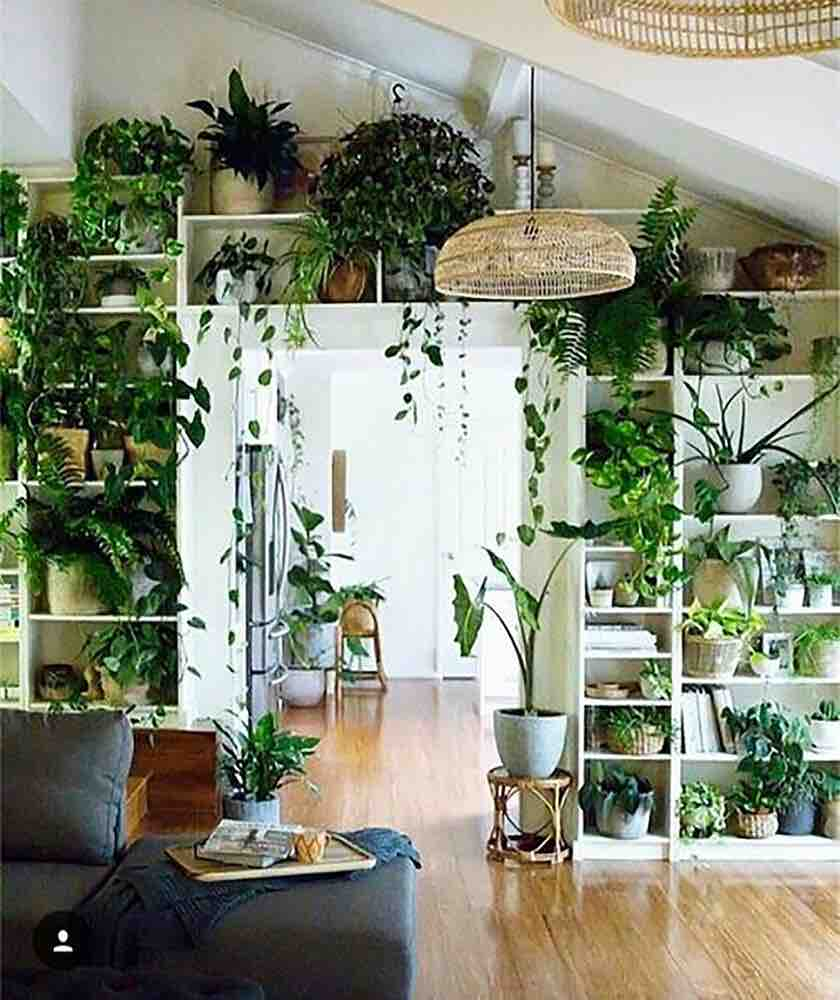
<figcaption>A modern indoor garden oasis.</figcaption>
Indoor plants have been shown to improve mental wellness and environmental quality. This home garden system make it easy and possible for people who don't have backyards and those who love plants to have a lush green oasis indoors.
I also want this to be a deeply personal project, so in the end, it must past the "will I use it" test. I want this Home Garden System (HGS) to be something I will actually use to expand my collection of house plants and turn my home into a garden oasis.
Based on this concept, there are key requirements:
<br>
<ul>
<li><strong>Need to make it easy to set up and expand</strong>: I want to make it simple to install into the home and if a plant is removed or added, I want to have this process be seamless. The HGS should make easy so that a garden owner doesn't need think about the trouble they will have to "configure a plant" into their garden, but instead, just feel the joy of adding to the garden. </li>
<li><strong>Joyful</strong>: Just like the book "The Joy of Cooking", I want the HGS to be something that doesn't feel like a technology product, but something that is in the home and makes having an indoor garden more joyful. I want a garden owner to look forward to using the HGS and feel like it is part of the garden experience.</li>
<li><strong>Trusted</strong>: Over time, the home garden should feel like an integral part of the home and thus the HPS will become more "mission critical". I want the system to be robust and not feel or be tenuous in being able to take care of what is now a member of the family.</li>
<li><strong>Shared experience</strong>: I'd like it to be a shared experience with all individuals that live in the family. Instead of the home garden becoming something automated to the point of being a thoughtless part of the environment, I want it to be something that promotes mindfulness and human connection. </li>
</ul>
<br>
<h5>HGS: Different Home Garden System Entities</h5>
<br>
I want to break down this HGS into the various conceptual components.
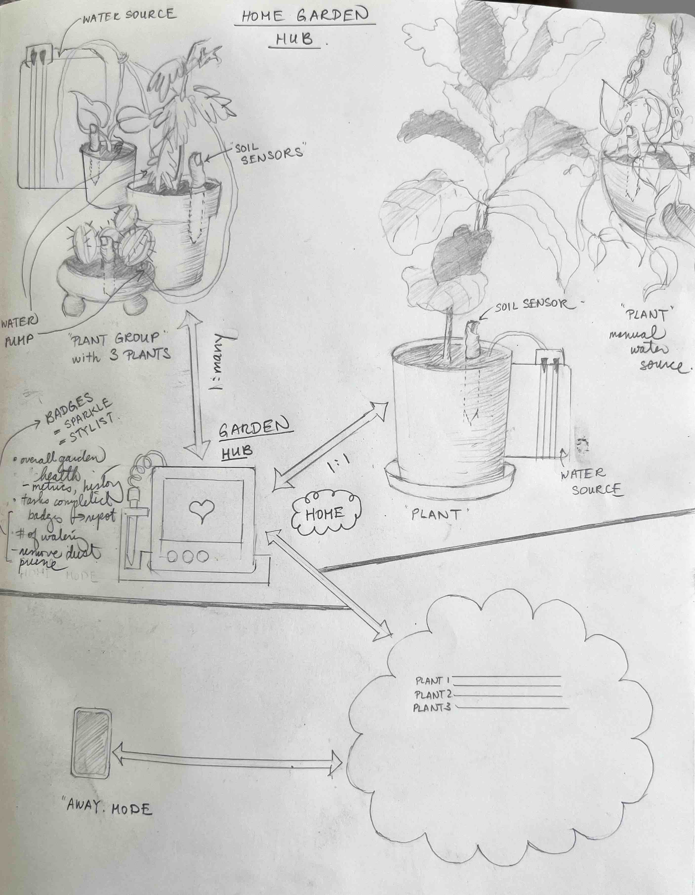
<figcaption>Entites in the Home Garden System.</figcaption>
<br>
<h6>Plants and Plant Health</h6>
Let's start with the plant and plant health.
I see each <strong>plant</strong> consisting of profile of information that will make sure it gets the care it needs. This include required amount of water, optimal temperature and humidity, sundlight and nurient levels. There may also be susceptibility to certain types of diseases. May be important to include where the plant was purchased and if it is part of some group of plants within the home.
Plants can be organized into <strong>plant groups</strong> in the home. Either as a single plant such as a large Fiddle Leaf Fig tree or a cluster such as a little cactus garden. Why this may be important is that the water source for plants may be either a 1:1 or 1:many relationship. This may also be true of sensors like light, temperature and humidity where it does not make sense to have multiple sensors on every plant in a given location.
There are also <strong>soil sensors</strong> that are associated with each plant which reports back to a central hub on the latest status of a plant. These sensors I see as a 1:1 relationship with each plant. While the sensor could check on many conditions of the soil, the minimal baseline is moisture. Following this, there could be sensors for temperature, sunlights, pests and visual appearance. I could imagine there could be varying levels of monitoring needed here between a garden-variety monstera versus a rare orchid. The sensor would also need to ensure its own health, mainly, does it have enough battery life so that it can warn the garden owner of this.
<br>
<h6>Plant Care</h6>
There could be various actions the HGS can take such as dispensing proper nutrients or turning on a light if the plants are not getting enough sunlight. However, foundationally, want to start with water levels as this is the most frequent action that a garden owner would need to take if it were not automated. It is also the main concern if a user is off on travel for more than a week.
From a watering perspective, there are a few modes:
<br>
<ul>
<li> 1. garden owner is notified and goes to plant to do the watering</li>
<li> 2. system check and then dispenses needed water for the plant</li>
</ul>
I could see this be a system-wide option or something that is a hybrid model. Perhaps there is a hanging plant that is quite away from the others. This may be a plant the user may just decided to take care of. On the other hand, if the user is gone for a 3 week vacation, there would be a need to have it fully automated. It does make me reflect on idea that if it is set up for 3 weeks, will the owner just keep it as is and automate it as well?
If the system is to automate watering, then it needs a water source. I see this as a 1:1 or 1:many relationship between each water source (eg. container of water) and the plants. Thus was need <strong>water source</strong> which can be "manual" or "auto". For the "auto" scenario the water source needs to have water levels. I also need to think about how the water gets to each plant. Does a <strong>water pump</strong> feed each plant separately or are multiple connected in a plant group?
<h6>Garden Hub</h6>
Finally, with all these connected entities that take input (sensors) and outputs (actions taken), there needs to be a way for this information to be conveyed to
I, and imagine other garden owners, would not want to go to each plant/sensor to interact with them to control them. Instead, it would be done via a central <strong>garden hub</strong> that will communicate with all the input and output, relay messages and drive analysis from it and communicate status and relevant information to the user. The hub would also take input from the garden owner and take action as necessary. For example, in an "away" mode, the system would take over all critical automation. In this model, I don't think each of the sensors or output devices know about each other, instead, all this is managed at the hub which is the "brains" of the system and which will persist data in the cloud so that access can happen within the home or outside. More of this to be explored in the System and Interaction Model section.
<h6>User</h6>
This includes information about the user that will in future maybe lead to more personalization. This could include: how many plants they own, how long they have been a plant parent
<h5>Overall System and Interactions Model</h5>
<br>
In the previous section, I've covered the various entities. In this section I'll explore the way the entities would interact with each other.
I think each soil sensor and water pump should operate in a stateless model only sending and receiving data from the environment and the central hub. In this manner, I can minimize the footprint that is needed at each sensor and reduce the complexity of the system opting for a bi-directional 1:many model instead of a many:many model. Given the communication here is amongst all the sensors, outputs and brains (aka. Garden Hub), I think I will use a technology like ESP-NOW for the communication. It will offer fast transfer of information and not be reliant on a internet outtage.
For the Garden Hub brains of the system, I think I will want to have enough information stored to allow for local operation even if it loses connection to the internet or power. This means having enough information in persistance and a battery source that would only be leverage if power to main system is lost. The Garden Hub would keep a record of each entity in the system (plant, soil sensor, water pump) which includes present state and historical state, communicate with each sensor for given actions and relay this information to the user and to be stored in the cloud so that a user can access the system and control even if they are away on business or vacation. The Garden Hub will also keep track of system-wide modes such as "home" and "away" mode. I also want to ensure that if there are multiple people in the home, the Garden Hub communicates enough information so that there is continuity in care and understand across the people in the home.
<br>
<br>
<h5>User Experience and Use Cases</h5>
I wanted to start with a set of use cases in order to focus this project as there are a lot of possible avenues to go down.
<h6><strong>HGS Set Up</strong></h6>
When a user gets HGS for a home, there will be a primary user who will set up it up. I would imagine they would need to easily:
<ul>
<li>Take the main <strong>Garden Hub</strong>, plug it in a power it up. There may be additional battery back up, but I would imagine this unit to be stationary in the home. This unit would need to connect to the internet and have access to the HGS data in the cloud. The unit would also need to sense for other IoT devices (soil sensors, water sources) connected that get to the system via ESP NOW. Each IoT device will have its own microcontroller with a unique MAC address which will be mapped 1:1 to a plant (soil sensor) or 1:few (water source). (Open Question: How will a reassignment of relationship happen?). The user would either input this information into the Garden Hub via an input interface on the actual device or via a webpage connected to the device which would send the user inputs to it as part of the "set up process"
<br>
- <strong>input data:</strong> Location of database. User name, email address, MAC address of Garden Hub unit.</li>
<br>
<li>Place each <strong>soil sensors</strong> device into plant pots around the home. For each soil sensor, turn on and need to calibrate (this may be a messy step for the user given the need to dip in water, take out, dry off and put in soil at ideal moisture). At this point, the soil sensor and the garden hub need to connect, ideally autonomously, to register: soil sensor MAC address, plant ID/profile, moisture level, pump on duration, pump wait time. Also need to log this information along with the various levels in the cloud database. Need to record in a manner which can be best displayed in human terms. For example, not setting time at "0" when system turned on but actual date and time. There needs to be a way for the user to see successful or failure of soil sensor registration. For now, if there is an issue, use will need to delete and start again. Ideally, need to provide way for user to edit this.</li>
<br>
<li>After completing the placement of soil sensors, I think there should be some <strong>visual confirmation</strong> to the user of the number of plants registered with the HGS so they know they added them correctly and the current status of soil/water sensor levels. This should appear both online and also in the HGS screen. </li>
<br>
<li>Then there is the configuration of the <strong>water sources and pumps</strong>. Here, I wonder if each of the microcontrollers on the soil sensors should also be the same controller for the water pump. So from an OO design perspective, these are different logical entities, but from a physical fulfillment, it would be the same IoT physical client. This would maybe simplify the registration of the devices with the same MAC address communication. Therefore the step would happen in the first bullet and a soil sensor either has a water source or will be manual and notify the user to water the plant</li>
<br>
<li>Finally is if there is a <strong>mobile app client</strong>. For the first phase, I think it would be a web client and then it would be great to have a mobile app client that can be used in "home" or "away" mode.</li>
<br>
<li>There may be other user preferences that could be configured at set up to personalize the experience, but I think these would be the key ones needed.</li>
</ul>
<br>
<h6><strong>HGS Run Routines</strong></h6>
With HGS set up, there is the routine checks and events that will happen.
<strong>Garden Hub initiated events:</strong>
<br>
<ul>
<li><strong>Soil Moisture Reading and Watering.</strong> Based on the frequency of soil moisture checks (default is 1x every 12 hours), the Garden Hub would poll each soil sensor for the health of each plant. The hub would go through an array of plants registered based on their MAC addresses and send a request of soil moisture reading. The response will be either receipt of a soil moisture reading or a failure. The soil moisture readings should be recorded and then compared to the moisture needs of the particular plant. Based on this comparison, there are a few things that can happen:
<ul>
<li>no action is needed</li>
<li>water is needed and the hub will send an action to the same MAC addresss to water the plant if the flag to water source "YES" is set. Otherwise, if the plant needs water, but the water source flag is set to "NO" then an alert is sent to the user to water a plant an a LED light on the garden hub gets set so the user knows that there is a pending action for them. </li></ul>
Watering happens in the cycle of water, pause, get reading, compared and then decided to water the plant again. There should be an upper limit to the amount of water dispensed before a trigger that there is an issue with the system. The amount of water dispensed/watering event is recorded by the Garden Hub in the cloud. At any point, the user should be able to simply understand the state of the home garden and any actions that they may take.</li>
<br>
<li><strong>Low Water.</strong>There are three causes of low water: use to water plants, a leak at watersource and evaporation. I think the Garden Hub will check on water source after each watering event. For the other issues such as leaks and evaporation, I think these will be interupt events from sensor to Garden Hub. (Thought: Given the water sensor may not know the cause of the low water, it will be sending a message of low water anyways to the Garden Hub so does it simplify design by just having any low water signal come from the water sensor).
</li>
</ul>
<br>
<strong>User Initiated Inputs. </strong>All user initiatiated inputs go to the Garden Hub except the original turning on of each sensor. These actions are:
<ul>
<li>Looking at system status, including historic data.</li>
<li>Updating to note that watering happened if it is a manual trigger</li>
<li>Alerting on water sources getting low on water to fill up</li>
<li>Possible badge system for doing other tasks such as trimming the plants.</li>
<li>Add/Remove/Change a plant (soil sensor) from system.</li>
<li>Add/Remove/Change a water source (water source) from system</li>
<li>Setting home or away mode.</li>
</ul>
</li>
</ul>
<strong>Sensor (Soil, Water) Initiated Events: </strong>For the most part, these sensors take inputs and report to the hub based on the hub's initiated requests. There are a few situations where I think interrupt events may make sense from the soil sensor and water sensor. This would be on event of low battery (both soil and water sensor) and low water (water source).
<h5><strong>System Data Structures and APIs</strong></h5>
To keep things simple, I want to standardize on as few objects and data structures being pass around as possible.
<h6>Data Structures and Actions</h6>
- Class: Plant_Profile
- Variables:
- Plant_Name (string): User-friendly name for the plant. Default values of to "Plant 1", "Plant 2"... Must be unique.
- Plant_ID (int): Unique ID of the plant that stays with it. Therefore, the microcontroller (sensor and output) can be changed between plants. If I connect the Plant_Profile only to the MAC Address of the microcontroller, then will be hard in future to change soil sensors and maintain the integrity of the log associated with the plant.
- MAC Address of the microcontroller (in this case the xiao locally driving the soil and water pump
- Moist_Level_Low (int): Lower boundary where if moisture goes below this, will start watering.
- Moist_Level_High (int): Upper boundary where if moisture goes above this, will stop watering.
- Water_On_Time_MS (int): Time water pump will be on for. The longer this is, the more water is dispensed before the check on soil moisture levels.
- Water_Soak_Time_MS (int): Length of time after dispensing water to wait before a new measurement is taken to determin if more water is needed.
- Functions:
- Plant_Profile (MAC Address): creates an instance of Plant_Profile connected to the MAC Address of the microcontroller (Xiao). Sets each variable based on defaults. Initializes a row in database
- Configure (int Plant_Type): sets the variables for now based on Plant_Type. Writes this to the real-time database.
- Update: Updates the variables for this Plant_Profile in the database.
- Class: Plant_Bud
- Variables:
- Unique identifier (SUI_ID): This will be the MAC Address as the sensor is physically connected to the microcontroller and will not change.
- Plant_ID: Id of the plant an instance is associated with. (May not need this if can look up Plant ID by MAC Address)
- Garden_Hub: Mac Address of the Garden hub so messages can be sent between the Plant_Bud microcontroller and the Garden_Hub microcontroller. All messages are between Plant_Bud and Garden_Hub. Then Plant_Bud will direct locally the actions from the Garden_Hub and relay any messages back via ESP Now
- Soil_Sensor: (input) Includes an instance of soil_sensor which will be used to query for soil moisture levels.
- Water_Pump_Pin: which will be an instance to take action with the pump. If it gets more complex, could be a class.
- Water_Source (int Pin): If -1 then does not have a sensor for water source level. If number if different than means also sensing for water source.
There could be other inputs and outputs in the future that the Plant_Bud can relay. The watersource associated with the water pump I think will stored at the Garden hub. Based on activation of the water pump, the Garden hub will then query the water source which will have its own sensor per container. I could also make a particular Plant_Bud the key watersource designate as well. This could be useful in "Plant Groups".
- Actions:
- Plant_Bud: Instantiate a Plant_Bud (int Plant_ID, int Soil_Pin, int Water_Pin, int Water_Source) passing in the plant associated with it and also the control pins for the soil sensor and water pump. This function will call to create a Soil_Sensor and Water_Pump object using the pin numbers. These input and output devices don't need to know the Plant_ID as this is kept with the Plant_Bud. If there is a value other than -1, then means there is also need to create a water_source instance)
- Get_Soil_Moist(): Gets the reading of soil_moisture and returns this.
- Activate_Water_Pump(int time): Activates the water pump for a set amount of time. Returns failure or success.
- Check_Battery_Level(): Checks on how much battery is left.
- Change_Plant_ID: This function changes the plant associated with the Plant_Bud.
- Class: Soil_Sensor
- Variables:
- Sensor_Pin (int): pin for the soil sensor
- Water_Level_Wet (int): calibrated level for sensor submerged in water.
- Water_Level_Dry (int): calibrated level for sensor that is dry.
- Get_Soil_Data (): Gets the reading for soil moisture as a percentage mapped from 0-100
- Functions:
- Soil_Sensor (int Pin): Instantiates an instance of soil sensor. Sets the soil sensor Pin.
- Calibrate (): Calibrates the 0 and 100 values for dry to totally wet.
- Get_Data (): Returns a value for the moisture level
- Class: Water_Pump (not in current design. maybe for later)
- Variables:
- Pump_Pin
- Class: Water_Source
- For now thinking the water source will be connected to a "lead" Plant Bud
- Variables:
- Sensor_Pin (int): Pin for water level sensor
- Functions:
- Water_Source (int pin)
- Get_WaterLevel () - returns water level
- Class: Garden_Hub
- MAC_Address: address
- Plant_Collection: Array of Plant_Profiles
- >> need to figure out database stuff.
- How store log or scoring
>> MAC Address becomes a index to access diferent sensors - need to get Plant ID to verify still same plant ID
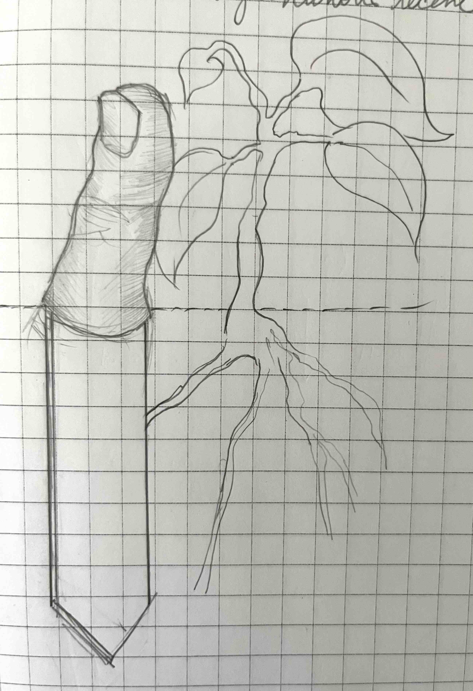
<figcaption>An idea for the soil sensors. Would be funny, at least I think so!</figcaption>
<h5>Setting up the Real-Time Database to Garden Hub</h5>
To learn how to work with Google Firebase, I used several of Random Nerd's tutorials. In particular:
- https://randomnerdtutorials.com/esp32-firebase-realtime-database/
- https://randomnerdtutorials.com/esp-now-auto-pairing-esp32-esp8266/
- logging??
- https://randomnerdtutorials.com/esp32-firebase-web-app/
I set up a new real-time database in order to store the various <strong>Plant Profiles</strong> which is based on the data structure above. For each, there is also information such as the MAC Address of the <strong>Plant Buds</strong> so that the Garden Hub can establish connection with each via ESP Now. Only the Garden Hub interacts with the real-time database in the cloud.
I also had to port my development environment from the Arduino IDE to VS Code with Platform I/0 extension in prep for needing to build a web interace to to Garden Hub so users can access it remotely when they are away from home. Authentication was through anonymous and via email for the logging.
Based on learnings from this, I was able to flesh out more the Garden_Hub variables and functions. The Garden Hub class would need to include:
- a real-time database object
- functions to easily read, write and update a plant profile.
I also thought about the database structure for plant profile and decided each plant would have an ID which would be the key to the database, and all other information would be under that. I also need to figure out the structure of the logs for this.
However, before I get into the logging, I thought an more priority MVP item would be to get the connection between the Plant_Bud instances and the Garden_Hub working.
<h5>Plant Buds Set-up</h5>
Up until now, I had played with the soil sensors getting data from a soil capacitive moisture sensor. I want to make each plant bud a set of standard hardware components connected in a specific manner. Here is the definitions:
- <strong>Xiao ESP32-C3</strong>: (required) microcontroller for a plant bud.
- <strong>Capacitive Soil Moisture Sensor v. 2.0</strong>: (required) input that senses water needs of the plant.
- AUOT connected to pin D0.
<br>
- <strong>Water Pump</strong>: (optional) output that dispenses water for a given ms for a plant.
- Connected to D1. Water Pump "1" (yes) or "0" (no) set by check on if there is any valid data coming from pin D1.
- <strong>Water Source</strong>: (optional) input that senses the water level of the source. If low, will alert user to fill up the water source.
- Connected to D2. Water Source "1" (yes) or "0" (no) set by check on if there is any valid data coming from pin D2.
<br>
- <strong>battery source</strong>: Each plant_helper will be powered by a battery source that will support the soil sensor and the water level sensor (if present). Depending on power needs of the water pump, this may be an externally powered unit.
- Need to figure out how to detect low battery.
<br>
<h5>Garden Hub Set-up</h5>
The Garden Hub hardware includes:
- <strong>Adafruit ESP32 Feather Board</strong>
<br>
- <strong>Screen (2.0inch Arduino SPI Module ILI9225)</strong>
- Product Docs: http://www.lcdwiki.com/2.0inch_Arduino_SPI_Module_ILI9225_SKU:MAR2001
<br>
- <strong>BME280 Sensor</strong>
<br>
- <strong>Battery</strong>
<br>
<h5>Setting up TFT Display on Garden Hub</h5>
I used this example to figure out how to set up the connection between a Plant Bud and the Garden Hub: https://randomnerdtutorials.com/esp-now-two-way-communication-esp32/.
- Installed the libraries: Adafruit SSD 1306. Already had the GFX library installed.
- Installed the BME280 Sensor. Had the Adafruit Unified Sensor already installed
Realized I had a TFT Screen: Installed the TFT_eSPI library based on info I got from a Reddit Forum.
Start with OLED so I can ensure it works before I work with the TFT screen.
<br>
<h5>Hardware Needs</h5>
<br>
IoT Sensors for Plants and Water
For each of the IoT sensors I needed to ensure it as equiped with the necessary input sensors and also the way to communicate with the central home garden hub. For this, an ESP32-C3 board is used.
Set up this board using these instructions:
https://how2electronics.com/getting-started-with-seeed-xiao-esp32-c3-board/
I used it to ensure I had the dev environment set up properly.
Sensors - using current ot measure resistance
- challenge is moisture but also fertilizer. Also corrosion.
https://www.youtube.com/watch?v=pFQaFnqpOtQ&t=2s
- more or less water, discharge/charge will impact.
Set up an analog read in pin D0 (also A0).
Totally dry readings:
- dry in air: 3165, 3310, 3319, 3311
- submerged into water: 1277,1311, 1294
Translate this moisture into percentage using map(); function.
NOTE - CHECK CAPACITOR INFO and https://makersportal.com/blog/2020/5/26/capacitive-soil-moisture-calibration-with-arduino
Create a soil sensor class and code which would sit on each soil sensor.
Started to work on getting the basic soil moisture sensor unit communicating through ESP NOW with the main Garden Hub microcontroller.
To start, I followed the information here: https://randomnerdtutorials.com/esp-now-two-way-communication-esp32/
- Installed the Adafruit SSD 1306 library. Already had the GFX library.
- Also the BME280 and already had the Unified Sensor Libraries
===
Re-engineering
Time-date:
https://randomnerdtutorials.com/esp32-date-time-ntp-client-server-arduino/
Got Garden hub to check to see if database exists and if not initialize
Get Plant Bud to self-initialize by seeing if there is an entry with it's mac address
Also standardized on pins so can produce multiple of them - soil sensors.
Log
Figure out a way to store logs that will sort in order and human readable
July 29 Webapp:
Learned how to fetch values from database: https://www.youtube.com/watch?v=O4N7yfaJYhI
Updated database structure to account for "Plant Data" and Log Data
TFT:
http://educ8s.tv/arduino-2-8-ili9341-tutorial/
http://educ8s.tv/arduino-2-8-ili9341-tutorial/#google_vignette
3.5 TFT
https://www.youtube.com/watch?v=NidjZOxMMxo
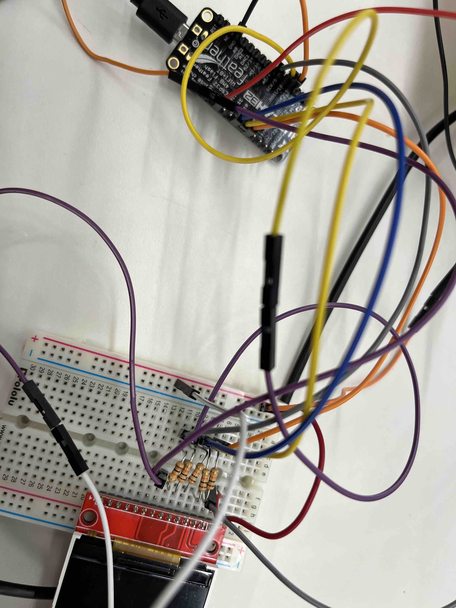
<figcaption>After much searching on the internet for the proper wiring for this TFT screen, Kassia was able to help me figure it out. Yippeee!!!</figcaption>
===CODE for WIRING
// For the Adafruit shield, these are the default.
#define TFT_DC 27 //4
#define TFT_CS 15 //15
#define TFT_RST 33 //2
#define TFT_MISO 19 //19
#define TFT_MOSI 18 //23
#define TFT_CLK 5
// Use hardware SPI (on Uno, #13, #12, #11) and the above for CS/DC
//Adafruit_ILI9341 tft = Adafruit_ILI9341(TFT_CS, TFT_DC);
// If using the breakout, change pins as desired
Adafruit_ILI9341 tft = Adafruit_ILI9341(TFT_CS, TFT_DC, TFT_MOSI, TFT_CLK, TFT_RST, TFT_MISO);
=====
Kerf Bending of design:
https://hackaday.com/2012/06/12/bending-laser-cut-wood-without-steam-or-forms/#:~:text=By%20alternating%20laser%20cuts%20along,angle%20project%20boxes%20we%20see.
Great tutorial
https://www.youtube.com/watch?v=nt-44j15xeI
https://www.youtube.com/watch?v=QvcpBnxsQws
https://drive.google.com/file/d/1ZYH1GoYfxwo6YFu6qyKfKsbrl-wkPnat/view
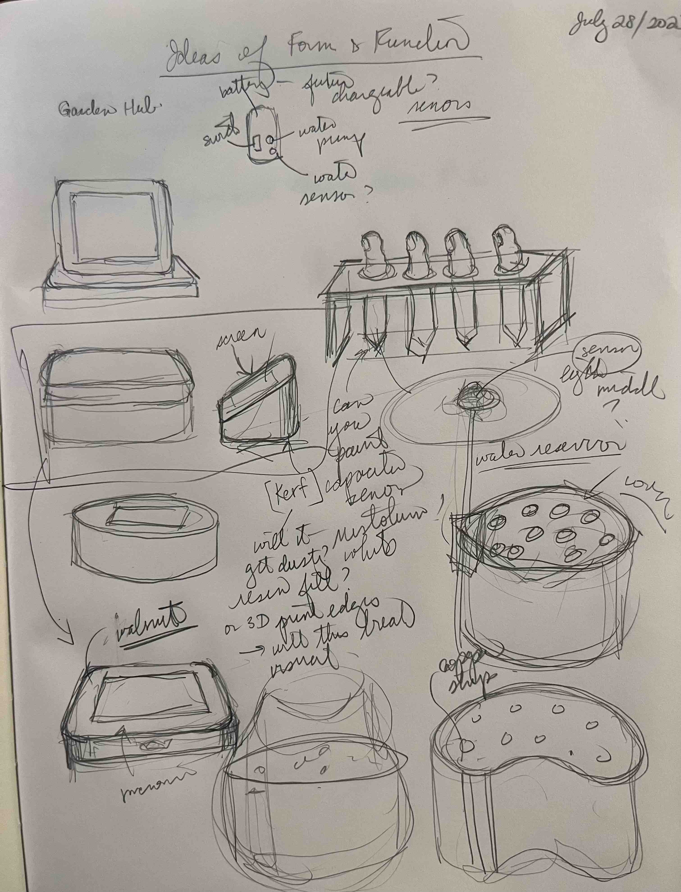
<figcaption>TBD</figcaption>
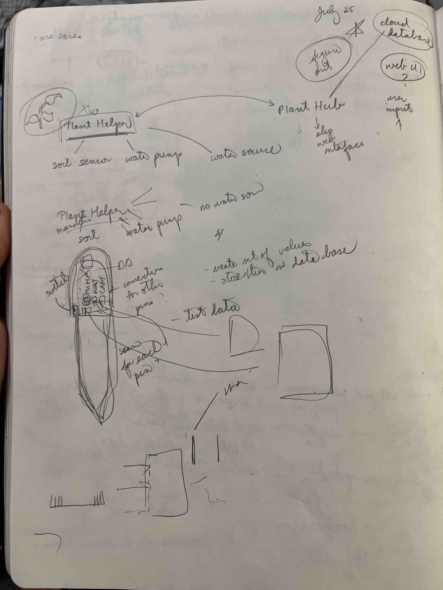
<figcaption>TBD</figcaption>
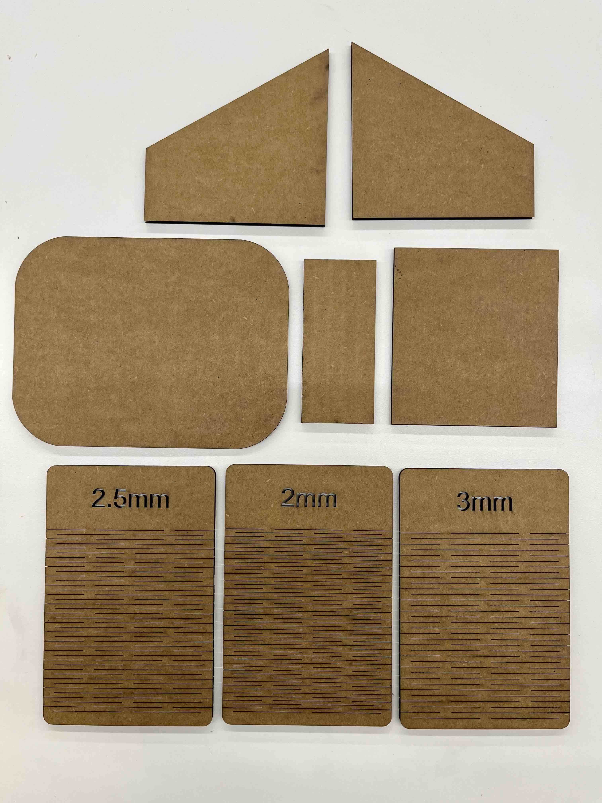
<figcaption>TBD</figcaption>
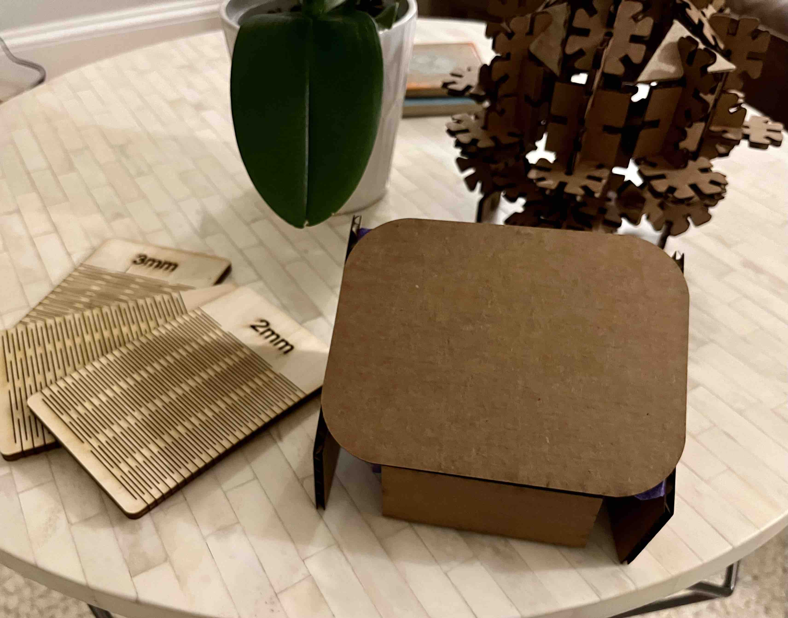
<figcaption>TBD</figcaption>
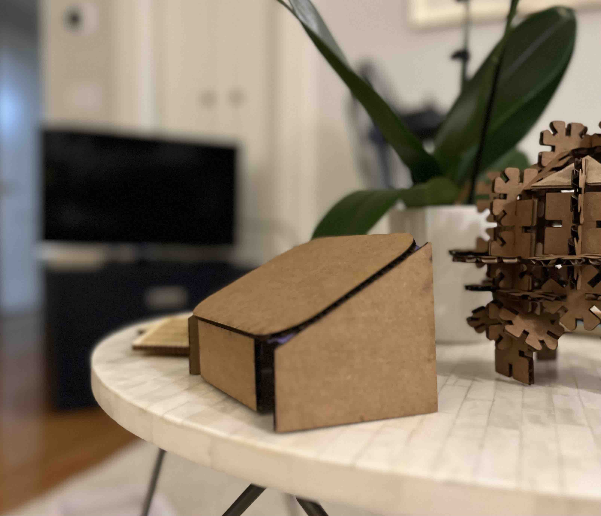
<figcaption>TBD</figcaption>
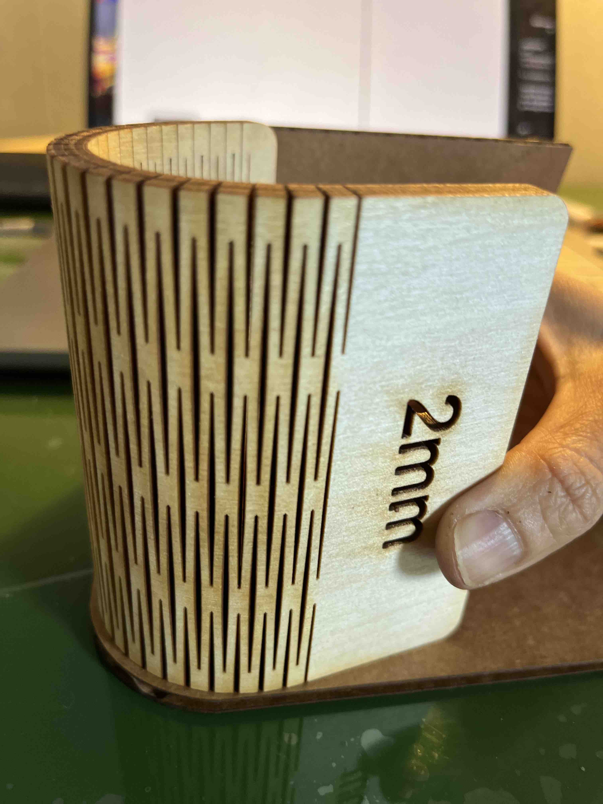
<figcaption>TBD</figcaption>
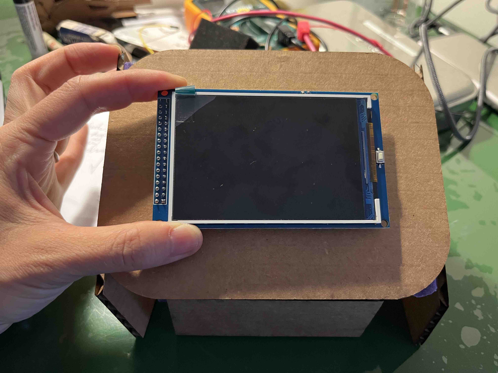
<figcaption>TBD</figcaption>
</div>